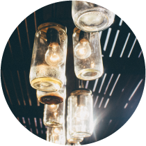
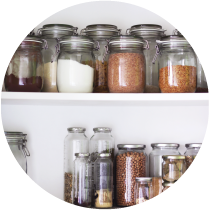
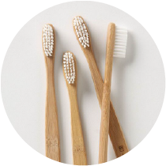
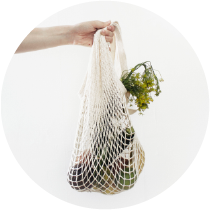
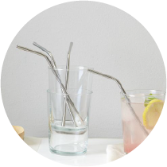
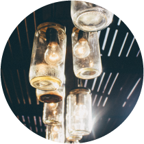
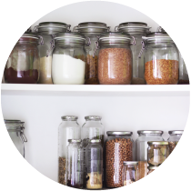
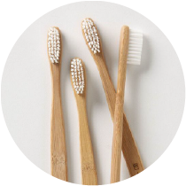
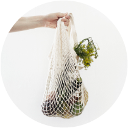
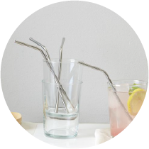

how
How can we reduce our impact?
Simple Swaps
Starting on your zero-waste journey is surprisingly easy, no matter how far along
you may be. It starts with the small things; convenience items you might use every day. Below you
will find a collection of items that are easily replaceable with more sustainable options, like
plastic cutlery for metal, or reusable grocery bags in place of disposable ones. A good rule of
thumb is, “If it doesn’t have to be single-use, it probably shouldn’t be.”
Below the gallery you’ll find a variety of links to other helpful resources on zero waste.
 









https://www.goingzerowaste.com/
https://zerowastehome.com/
http://time.com/5218046/how-to-live-zero-waste/
https://www.onegreenplanet.org/animalsandnature/10-ways-to-adopt-a-zero-waste-lifestyle/
https://zerowastenerd.com/
https://spoonuniversity.com/lifestyle/7-tips-to-start-living-low-to-no-waste-in-college
https://www.naturallivingideas.com/going-zero-waste/
https://www.mindbodygreen.com/articles/how-to-decorate-a-zero-waste-home